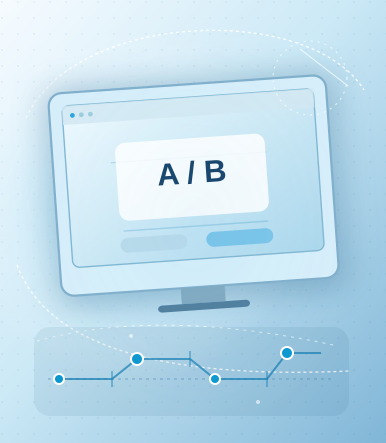
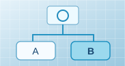
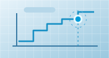

Apresentação de estímulos
Os participantes recebem estímulos linguísticos em tarefas com instruções e condições experimentais definidas.
LAPELC² / PESQUISA / MEDIDAS COMPORTAMENTAIS
Em tarefas experimentais, registramos julgamentos, escolhas, tempos de resposta e acurácia para investigar o processamento da linguagem.

Os participantes recebem estímulos linguísticos em tarefas com instruções e condições experimentais definidas.
Coletamos escolhas, julgamentos e tempos de resposta durante a execução das tarefas.
Comparamos medidas de acurácia, latência e padrões de resposta entre condições experimentais.
Investigação de respostas a estímulos de fala e outras manifestações da linguagem.
Tarefas que permitem examinar respostas durante a compreensão de palavras e sentenças.
Comparação de desempenhos sob diferentes estímulos e condições experimentais.
Avaliação de estímulos linguísticos por meio de escalas de resposta.

Seleção de uma resposta após a apresentação de um estímulo.
Classificação de sequências apresentadas em uma tarefa experimental.

Registro da latência entre a apresentação do estímulo e a resposta.
Medidas comportamentais podem ser combinadas com rastreamento ocular e registros eletrofisiológicos, ampliando as possibilidades de investigar o processamento da linguagem.